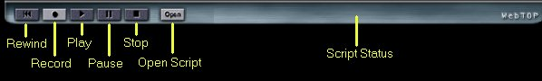
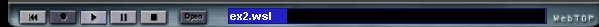

How to Record Sessions
The fourth portion of WebTOP screen is the recording panel. It contains VCR-like controls that
allow you to record a WebTOP session, store it in the form of a script, and
then play the script back at any later time.
There are two modes of operation of the recording feature of WebTOP, the
RAM-Mode and the Disk Mode.
RAM-Mode
This mode does not require setting up the recording feature of WebTOP but
allows you to save sessions only to the computer RAM memory. Under this mode,
you can record a session and replay it but you cannot save it to disk and
cannot replay it again after you run another session or after you close the
browser. This mode does not allow you to run the provided examples.
Disk-Mode
This mode allows you to save sessions to computer hard disk, play sessions
that are stored on disk and run the provided examples.
The following figure provides a description of the buttons available at the
recording panel. You can use only the highlighted keys.
|  |
| Figure 1 Default start-up setting
for the recording panel. |
The default start-up setting for the Disk-Mode
has only two highlighted buttons: the 'record'
and the 'open Script.' You can use the 'record' button to record a new script and the 'Open Script' button to retrieve a previously saved
script. Figure 2 shows a recording panel after a script called 'ex2.wsl' had been retrieved. You need to press the play button to run the script.
The Script Status display shows the progress of a running script. Figure 3
shows an example of a running script.
|
| Figure 2 A recording panel
after a script had been retrieved. |
|  |
| Figure 3 a recording panel showing a
running script. |
To record a script press the record button. Make any change to
the scene then press the stop button. A file save dialog box will appear
prompting you for a name of the script.
|
| Figure 4 the status of the recording
panel when in recording mode. |

|